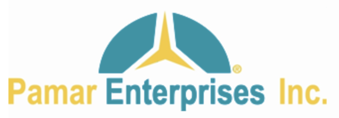
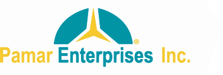
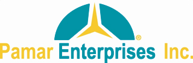
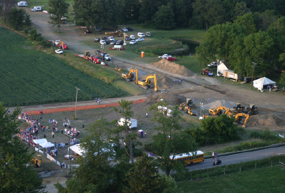
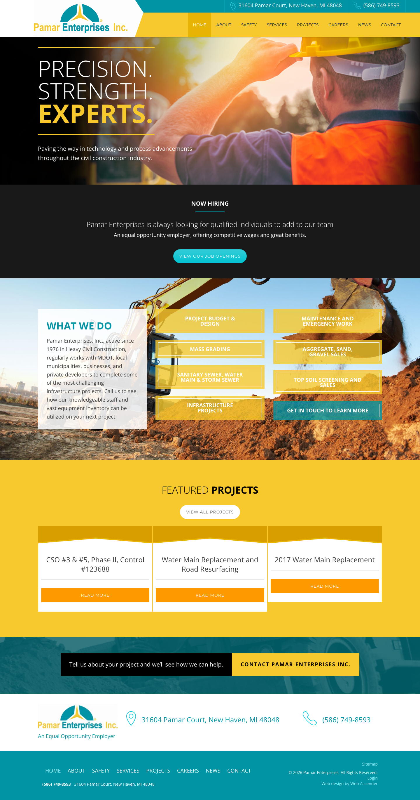

Everything in this document is taken from the live site,
www.pamarenterprises.com, captured on 25 September 2026 into docs/brand/source/ (pages, stylesheets,
assets, screenshots, rendered styles). Where the site gives no evidence, the guide says so
and separates any recommendation from what was found.
Part A: Brand guide
Pamar Enterprises, Inc. is a family-owned heavy civil and underground utility contractor in New Haven, Michigan. This is how the site describes the company, in its own words:
"Precision. Strength. Experts." Home page hero, H1
"Paving the way in technology and process advancements throughout the civil construction industry." Home page hero, subheading
"Pamar Enterprises, Inc., active since 1976 in Heavy Civil Construction, regularly works with MDOT, local municipalities, businesses, and private developers to complete some of the most challenging infrastructure projects. Call us to see how our knowledgeable staff and vast equipment inventory can be utilized on your next project." Home page, "What We Do"
"Pamar Enterprises is a family owned business that will soon be celebrating 50 years in operation. Over the years, we have established a reputation for implementing tough infrastructure projects and respond quickly to utility maintenance and emergencies. We have a team of over 120 employees that work hard everyday to ensure our clients success." About page, intro
"In 1968, Pasquale and Mary Ann Acciavatti founded P&M Contracting Company, which laid the foundation for Pamar Enterprises, Inc. [...] In 1972, P&M Contracting Company was incorporated with Pamar Enterprises, Inc." About page, "Company History"
| Item | Value on the live site | Where |
|---|---|---|
| Address | 31604 Pamar Court, New Haven, MI 48048 | Header, footer, contact page |
| Phone | (586) 749-8593 | Header, footer, contact page |
| Founded | 1968 (P&M Contracting), incorporated 1972, "active since 1976" | About page history; home page |
| Size | "over 120 employees" | About page |
| Clients | MDOT, local municipalities, businesses, private developers | Home page |
| Services | Project budget and design; mass grading and land balancing; sanitary sewer, water main and storm; infrastructure projects; maintenance and emergency work; specialty work; aggregate, sand and gravel sales; topsoil screening and sales | Services page H2s |
| Affiliations | Michigan Infrastructure & Transportation Association (MITA); Associated Builders & Contractors (ABC) | About page |
| Employer statement | "An Equal Opportunity Employer" | Footer, every page |
| Site platform | WordPress, WPBakery Page Builder, "Alpha Child" theme by Web Ascender (launched 2017 per the News page) | summary.json, theme CSS header |
One logo is in use: a teal dome (arc) with a yellow three-point star cut through it, a registered-trademark symbol at the right edge of the dome, and the wordmark "Pamar Enterprises" in teal with "Inc." in yellow beneath it.

Three raster files. No SVG or other vector file is served anywhere on the site.


| Element | Site file (logo-2.png) | Supplied file (pamar-logo-lockup.png) | Site CSS |
|---|---|---|---|
| Dome, "Pamar Enterprises" | #0394A6 | #4192A3 | #0094A5 |
| Star, "Inc." | #F4CA39 | #EFCB53 | #F7C92D |
On the live site the logo only ever appears on white: a white angled panel in the header, a white footer band, and a white browser tab. It is never placed on teal, yellow, dark, or photographic backgrounds. No reversed (white) version exists.
og:image on every page points at
logo-1.png, which is actually the MITA association logo, so social shares
show the wrong logo.
Ranked by use in the theme's own stylesheet (alpha-child/style.css),
confirmed against rendered pages and screenshots. Colors that only come from WPBakery,
Gutenberg presets, Font Awesome, Gravity Forms, or jQuery UI are left out: they are
framework palettes, not Pamar's.
Normal text needs 4.5:1 for AA and 7:1 for AAA. Large text (24 px+ regular, or 19 px+ bold) needs 3:1 for AA and 4.5:1 for AAA.
| Where | Text | Background | Ratio | AA | AAA |
|---|---|---|---|---|---|
| Body text | #404040 | #FFFFFF | 10.37 | Pass | Pass |
| Section label on white | #333333 | #FFFFFF | 12.63 | Pass | Pass |
| Nav links | #0A2742 | #F7C92D | 9.66 | Pass | Pass |
| CTA button, "Featured Projects" heading | #000000 | #F7C92D | 13.35 | Pass | Pass |
| "Now Hiring" section | #FFFFFF | #191919 | 17.58 | Pass | Pass |
| Hero accent word "EXPERTS." | #F7C92D | #191919 | 11.17 | Pass | Pass |
| CTA text block | #FFFFFF | #000000 | 21.00 | Pass | Pass |
| White pill button | #666666 | #FFFFFF | 5.74 | Pass | Large only |
| Body links, "What We Do" heading | #0094A5 | #FFFFFF | 3.63 | Large only | Fail |
| Footer text and links, top contact bar | #FFFFFF | #0094A5 | 3.63 | Large only | Fail |
| Teal pill button hover | #FFFFFF | #00A4B0 | 3.03 | Large only | Fail |
| Footer active link | #A9F6FF | #0094A5 | 3.00 | Fail | Fail |
| Teal pill button | #FFFFFF | #00C1CF | 2.20 | Fail | Fail |
| Orange "Read More" button | #FFFFFF | #FF9900 | 2.14 | Fail | Fail |
| Nav active and hover | #FFFFFF | #E7B304 | 1.94 | Fail | Fail |
| Service tiles on the home page | #FFFFFF | #F7C92D | 1.57 | Fail | Fail |
Two families render on the site. Both are loaded from Google Fonts by the WordPress
theme (fonts.googleapis.com/css?family=...). The rendered-font check
(document.fonts) on the home page shows exactly these faces in use: Open
Sans 300, 400, 700 and Montserrat 400.
| Family | Weights loaded | Weights rendered | Used for | Source | Fallback in CSS |
|---|---|---|---|---|---|
| Open Sans | 300, 400, 700, 800 | 300, 400, 700 | Body, all headings H1 to H4, footer, forms, contact CTA button | Google Fonts | sans-serif |
| Montserrat | 400, 700 | 400 | Main navigation, mobile menu, WPBakery buttons, footer credit line | Google Fonts | sans-serif |
| Raleway | 300, 400, 500, 700, 900 | none | Requested by the parent theme; no rendered element uses it | Google Fonts | n/a |
| Open Sans Condensed | 300, 700 | none | Requested by the parent theme; no rendered element uses it | Google Fonts | n/a |
| Font Awesome 4.6.2 and 5 | icon fonts | not visible | Loaded by plugins; the visible icons are image files (see Imagery) | CDN and plugin | n/a |
Open Sans and Montserrat are published under the SIL Open Font License 1.1. They may be self-hosted, embedded in the site, and used in print and PDF at no cost. Self-hosting (as the new site already does with Fontsource) removes the Google Fonts request and the related privacy consideration. Raleway is also OFL but does not need to be carried over.
The captured photos fall into three groups.
excavator-bg) sits behind
every interior page title, darkened with an overlay so white text sits on it. The
home page hero uses a different photo: a worker in a hard hat shading his eyes at
sunset, which reads as stock. Both crop to a wide band about 270 px tall.

project-bg.png), and yellow rules above and below the hero
headline. The mobile menu uses a plain three-bar hamburger.

source/screenshots/.
Traits below are each backed by a line from the live copy.
| Trait | Evidence (quoted) |
|---|---|
| Plain and direct | "Give us a call for pricing." · "Tell us about your project and we'll see how we can help." |
| Experience-led | "Due to our many years of experience, we are often called upon to do some of the most complex specialty work." |
| Capable under pressure | "We are the go-to resource for many Michigan municipalities when they need a quick turnaround." |
| Technical when it counts | "Pipe Bursting 27,000LF of 6″ and 8″ Diameter pipe up to 10″ Diameter HDPE SDR pipe." |
| Safety as a value, not a slogan | "seeking safety above & beyond MIOSHA standards" · "Weekly Crew Safety Meetings" |
| Family and community | "a family owned business" · "Sabrina and I dropped off the donations to Caroline's House yesterday." |
| Occasionally over-claims | "We're the best at delivering huge results" · "world class service and results" (both unsupported on the page) |
The site uses four forms of the name, inconsistently:
| Form | Where it appears |
|---|---|
| Pamar Enterprises, Inc. | History copy, "What We Do" paragraph (with comma) |
| Pamar Enterprises Inc. | Logo, contact page H3, CTA button, news post titles (no comma) |
| Pamar Enterprises | Page titles, copyright line, most body copy |
| Pamar | Rarely, inside history copy ("Pamar began to specialize") |
Part B: Web style guide
Role names follow the new site's token convention. Values are what the live site renders today; flagged rows fail contrast and carry a proposed value in the last column.
| Token | Live value | Role | Proposed (only where flagged) |
|---|---|---|---|
--color-text |
#404040 | Body text on white | |
--color-text-strong |
#333333 | Headings on white | |
--color-text-inverse |
#FFFFFF | Text on teal, near-black, black, photo overlays | |
--color-text-on-yellow |
#000000 / #0A2742 | Text on yellow (CTA button, nav) | |
--color-bg |
#FFFFFF | Page background | |
--color-bg-brand |
#0094A5 | Teal sections, footer, top bar | |
--color-bg-accent |
#F7C92D | Yellow sections, nav bar | |
--color-bg-dark |
#191919 | Dark feature sections | |
--color-bg-black |
#000000 | CTA text block, project title band | |
--color-primary |
#0094A5 | Brand teal: links, icons, rules, form submit | |
--color-primary-hover |
not defined (submit hover goes to #000) | Hover on teal actions | #007A88 (recommendation) |
--color-action |
#00C1CF (white text, 2.20:1) | Pill buttons | Fill #F7C92D with #0A2742 text, or #0094A5 with white text at 18 px+ bold |
--color-action-hover |
#00A4B0 | Pill button hover | #E7B304 (yellow) or #007A88 (teal) |
--color-action-secondary |
#FF9900 (white text, 2.14:1) | "Read More" on cards | Drop orange; use the primary button style |
--color-cta |
#F7C92D with #000 text | Contact CTA bar button | Keep; this is the accessible pattern |
--color-cta-hover |
#E7B304 | CTA and nav hover | Keep with dark text |
--color-nav-active |
#E7B304 (white text, 1.94:1) | Current nav item | Same fill, #0A2742 text or a 3 px #0A2742 underline |
--color-link |
#0094A5 (3.63:1) | Inline links | #007A88 (4.7:1) or underline plus #0094A5 at 24 px+ |
--color-link-inverse-active |
#A9F6FF on #0094A5 (3.00:1) | Footer current link | #FFFFFF bold with underline |
--color-border |
#CCCCCC | Card dividers, rules | |
--color-border-accent |
#F7C92D / #D89E00 | Card border and band | |
--color-border-input |
#767676 (browser default) | Form fields | #CCCCCC rest, #0094A5 focus |
--color-focus |
none (default outline removed on buttons) | Keyboard focus ring | 2 px #0A2742 outline, 2 px offset |
Desktop values read with getComputedStyle at 1,440 px
(computed-styles.json). The theme sets no separate mobile sizes; headings
simply wrap. Family is Open Sans unless noted.
| Style | Size / line height | Weight | Case, tracking | Color | Where |
|---|---|---|---|---|---|
| Hero H1 (home) | 77 / 77 px | 300, accent word 700 | Uppercase | #FFF, accent #F7C92D; 3 px yellow rules above and below, 30 px padding | Home hero |
| Page H1 | 46 / 46 px | 700 | Uppercase | #FFF on darkened photo | Interior page headers |
| Project H1 | 46 / 46 px, prefix 20 px | 300, prefix 700 | Prefix uppercase, 4 px tracking | #FFF, prefix #F7C92D on #000 | Project detail pages |
| H2 feature | 34 / 34 px | 700 or 300 with one 700 word | Uppercase | #0094A5 or #000 | "What We Do", "Featured Projects", "We're Growing" |
| H2 section | 28 / 28 px | 700 | Uppercase | #404040; #FFF on teal | Services, Company History |
| H2 label | 20 / 20 px | 700 | Uppercase | #333 or #FFF; 2 px teal rule beneath, about 50 px wide | "Now Hiring", "Our Affiliations", "Our Focus on Safety" |
| H3 | 24 / 24 px (news 30 / 30) | 300 on dark, 400 or 700 on white | None | #FFF or #404040 | Sub-statements, affiliation names, news titles |
| H4 card title | 24 / 31.2 px | 400 | None | #404040; 1 px #CCC rule beneath, 20 px padding | Project cards |
| Lead paragraph | 24 / 38.4 px | 400 | None | #FFF on photo; #404040 | Page header subtitle (p.large) |
| Hero paragraph | 20 / 32 px | 400 | None | #FFF | Home hero, CTA text block |
| Body | 18 / 28.8 px (1.6) | 400 | None | #404040 | All body copy, form text |
| Small | 14 / 22 px | 400 | None | #FFF on teal | Footer fine print, copyright |
| Nav (Montserrat) | 14 px | 400 | Uppercase | #0A2742 | Main navigation, 8 x 17 px padding, 84 px tall bar |
| Button (Montserrat) | 14 px | 400 | Uppercase, 1 px tracking | #FFF or #666 | Pill and flat buttons, 14 x 20 px padding |
| CTA button | 18 / 18 px | 700 | Uppercase, 2 px tracking | #000 on #F7C92D | Contact CTA bar, 30 px side padding, 80 px tall |
| Footer nav | 18 px | 400 | Uppercase | #FFF | Footer links, 10 px padding |
clamp() down to 30 / 26 / 22 / 18 px on phones. The 77 px hero only works
because it is three one-word lines.
Rendered from the live values. Hover and focus states are the ones the site actually produces; the "focus" examples show that the site removes the default outline and adds nothing back.
input[type=submit] but Gravity Forms outputs a
<button>, so the browser default shows.
Body link: Essential Staff & Vendors (#0094A5, no underline at rest; the theme sets no hover style).
Footer contact line: 31604 Pamar Court, New Haven, MI 48048 (#0094A5, 24 px, with icon image).
| Property | Live site |
|---|---|
| Content width | About 1,250 px at a 1,440 px viewport (WPBakery rows); job listings capped at 1,200 px in the child theme. Full-bleed color and photo sections. |
| Breakpoints | Child theme media queries at 1,450, 1,200, 1,024, 800, and 600 px. |
| Section padding | Roughly 60 to 100 px top and bottom on feature rows, measured from screenshots (WPBakery inline values, not a scale). |
| Spacing values seen | 4, 8, 10, 14, 15, 17, 20, 23, 25, 30, 35, 40 px. No consistent scale. |
| Radius | 0 everywhere except the 28 px pill buttons and a 30 px pill on the current page-list item. |
| Shadows | Header: 1 px 1 px 3 px rgba(0,0,0,0.18). Nav dropdown: 0 3 px 3 px rgba(0,0,0,0.2). Nothing else. |
| Rules and borders | 1 px #CCC dividers; 2 px #0094A5 short rule under section labels; 3 px #F7C92D rules around the hero H1; 1 px #F7C92D card border; 4 px white photo frame on About. |
| Icons | Location pin and phone as raster images (teal line style); hamburger as three bars; Font Awesome loaded but not visibly used. No icon set for services. |
| Motion | animate.css and skrollr loaded by WPBakery; header has a 300 ms transform transition. No other intentional motion. |
container-page utility. Keep radius at 0 for cards and inputs to match the
brand's square, industrial feel, and use one pill radius (9999 px) for buttons if the
pill is kept. Replace raster icons with a single line-icon set in teal.
The new site's current look is a placeholder, not Pamar's brand. This table compares the
live brand to the placeholder tokens in src/app/globals.css, the wordmark
component src/components/layout/logo.tsx, the fonts, and
src/lib/site.ts. Proposals only; no site code changes yet.
| Area | Live brand | New site placeholder | Proposed change |
|---|---|---|---|
| Body font | Open Sans 300/400/700 (Google Fonts) | --font-sans: Inter Variable (Fontsource) |
Swap to @fontsource-variable/open-sans; set
--font-sans: "Open Sans Variable". Drop Inter.
|
| Display font | Open Sans 700 uppercase for headings; Montserrat 400 uppercase for nav and buttons | --font-display: Oswald Variable, condensed |
Set --font-display to Open Sans as well (700, uppercase,
tracking-tight to normal). Optionally add Montserrat 400 for nav and button
labels; otherwise use Open Sans 700 at 14 px with 1 px tracking. Drop Oswald.
|
| Primary color | Teal #0094A5 (structure, links, footer) | No teal. Accent scale --color-brand-* is amber #F2A900. |
Add a --color-teal-* scale with 500 = #0094A5, 600 ≈ #007A88 (AA
text), 400 = #00A4B0, 300 = #00C1CF, 50 = #E6F5F7. Make teal the primary for
links, footer, top bar, focus.
|
| Accent color | Yellow #F7C92D, hover #E7B304, band #D89E00 | Amber #F2A900 (brand-500), #FBB91C (400), #C98A00 (600) | Re-point the scale: brand-300 = #F7C92D, brand-400 = #E7B304, brand-500 = #D89E00, brand-700 = #9A6700 for text. Keep dark text on yellow fills (already the placeholder rule). |
| Neutrals | Pure grays: #191919, #333, #404040, #666, #CCC, #F7F7F7 | Cool "ink" scale with a blue cast (#161A1F, #333A42, #5C6570, #CFD4DA) |
Re-tune --color-ink-* to neutral gray: 950 #191919, 900 #262626, 800
#333333, 700 #404040, 500 #666666, 300 #CCCCCC, 100 #EEEEEE, 50 #F7F7F7. Or keep a
slight teal cast (chroma toward #0094A5) so dark sections harmonize with the
brand.
|
| Orange and bright teal | #FF9900 and #00C1CF buttons, both failing contrast | Not present | Do not carry over. One primary button style (yellow fill, navy text) and one secondary (teal outline or teal fill with white 18 px bold text). |
| Navy nav text | #0A2742 | Not present | Add as --color-navy for text on yellow and for the focus ring. |
| Focus ring | None (outline removed) | 2 px amber outline, 2 px offset | Keep the pattern, switch color to navy #0A2742 on light and yellow #F7C92D on dark backgrounds. |
| Logo |
Registered dome-and-star lockup, teal and yellow, on white only. Master files in
docs/brand/logo/.
|
Text wordmark with an amber bar in logo.tsx |
Replace the text wordmark with the supplied lockup (served from
public/ as PNG now, SVG after a faithful trace). Keep the ® symbol.
Keep the logo on a white header panel; do not create a reversed or recolored
version unless Pamar confirms the registration allows it.
|
| Header | Teal contact bar plus yellow nav bar, fixed, angled white logo panel | Single white header, amber accents | Bring back the teal utility bar with address and phone; nav on white or yellow with navy text. Keep it sticky but shorter than 127 px on mobile. |
| Footer | White band (logo, EOE, contact) plus teal band (links, legal) | Dark ink footer | Teal footer with white text at 16 px+ (3.63:1 only passes for large text; use 18 px 700 or a darker teal #007A88). |
| Radius | 0, except pill buttons | Tailwind defaults in components | Set radius to 0 on cards, inputs, and images; pill or 0 on buttons (client choice). |
| Contact details | (586) 749-8593; 31604 Pamar Court, New Haven, MI 48048 | site.ts: "(000) 000-0000", "Street address", "City, ST 00000" |
Fill in the phone and address; email is not published on the live site (the
contact form is the only channel) so keep
info@pamarenterprises.com flagged until confirmed.
|
| Time zone | Michigan | site.ts: America/New_York | Change to America/Detroit (same offset, correct zone). |
| Tagline and description | "Precision. Strength. Experts." and the "active since 1976" paragraph | "Building the infrastructure our communities run on." plus a generic description | Use the live tagline; write the description from the About intro (family owned, heavy civil and underground utilities, MDOT and municipalities, New Haven MI, since 1976 pending confirmation). |
| Navigation | Home, About, Safety, Services, Projects, Careers, News, Contact | Services, Projects, About, Safety, Careers, Subcontractors, plus "Contact Us" CTA | Keep the new order and the Subcontractors entry; add News only if the client will publish. Label the CTA "Contact" to match the live site. |
| Name form | Mixed (see section 6) | site.name "Pamar Enterprises", shortName "Pamar" |
Add legalName: "Pamar Enterprises, Inc." for the footer, schema.org,
and bid documents.
|